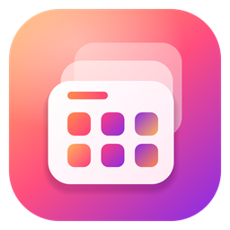

DeskNest
A desktop organiser for Windows 10 and 11. It sorts the icons on your desktop into translucent, blurred fences that sit behind your windows.
Fences, rules and pages
Draw fences on the desktop, drag items between them, and let sorting rules file new items for you. Use several pages of fences and switch between them.
Search and notes
Search every fence, folder and note from the keyboard. Keep sticky notes and checklists right on the desktop.
Backups you can restore anywhere
Back up your layout once a day to a folder or to your own Google Drive, and get it all back on a new PC. DeskNest can only see the backup files it saves itself. Read the privacy policy.